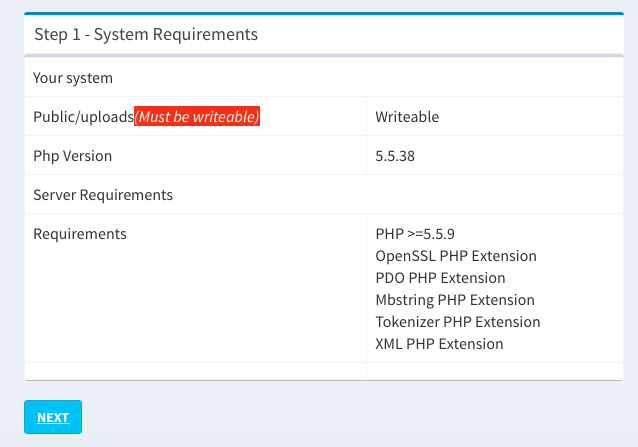
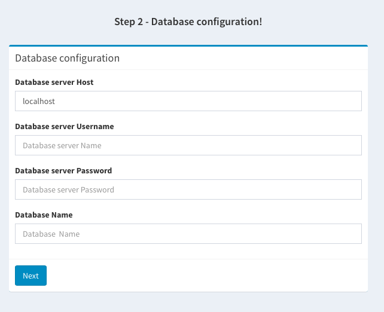
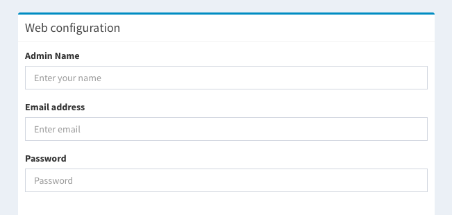
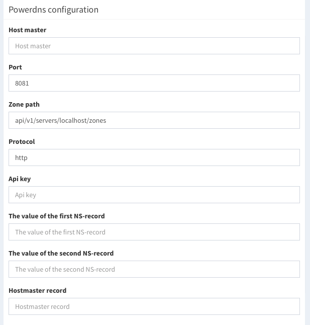
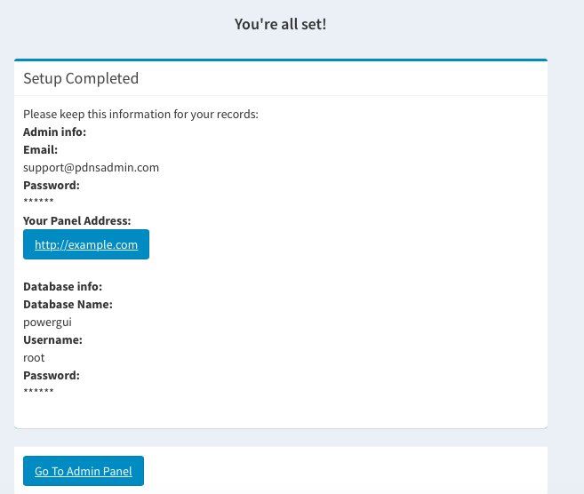

Installation
This section describes how to install PdnsAdmin.
Step 1: The first thing you need to do to install PdnsAdmin manually is to download the latest installation package at
https://github.com/pdnsadmin/pdnsadmin
Step 2: Next, you must upload the installation package on your hosting account through your cPanel -> File Manager or using an FTP client (copy the installation package to your "DocumentRoot" in your computer if you want to install PdnsAdmin on your local.)
Step 3: Create a MySQL database and assign a user to it. Remember the database details, since you will need them during the script installation.
Step 4: Go through the PdnsAdmin installation process
In our example we will install PdnsAdmin for domain example.com. Once the package is uploaded and you have a MySQL database, navigate to http://example.com/setup
-
System Requirements:
- Folder "uploads" must be writeable
- Database type: Mysql(>=Version 5.x)
-
PHP:
++ Version >= 5.5.9 ++ OpenSSL PHP Extension ++ PDO PHP Extension ++ Mbstring PHP Extension ++ Tokenizer PHP Extension Note: System requirement for Php and Mysql version depends on which laravel version we are using for pdnsadmin
PdnsAdmin v1.0.1. uses laravel 5.2
-
Database configuration:
+ Database server Host + Database server Username + Database server Password + Database Name
-
Powerdns configuration:
-
Web configuration:
++ Admin Name ++ Email address ++ Password
-
Powerdns configuration:
++ Host master ++ Port ++ Zone path ++ Protocol ++ Api key ++ The value of the first NS-record ++ The value of the second NS-record ++ Hostmaster record
-

Click on the button "Create" and wait a few seconds..

Your PdnsAdmin installation was successfully completed. Now you can navigate to its Backend